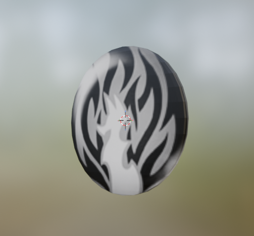
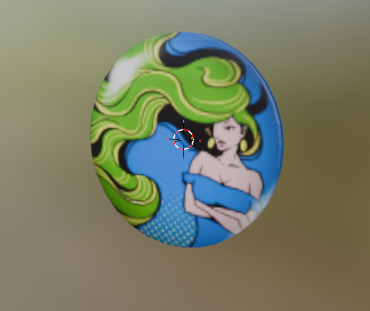
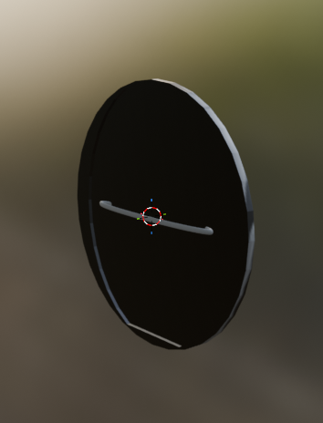
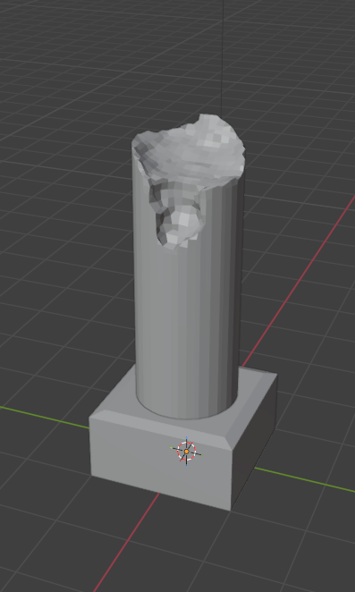
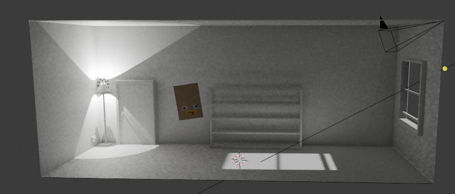
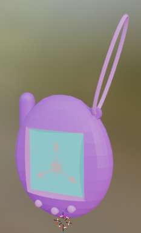
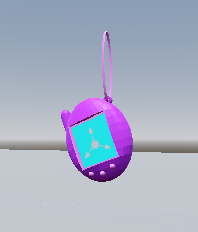

I don't really have great explanations, I've just been switching between a bunch of projects and learning a bunch of things. The best way to detail it is probably a week-by-week summary.
6/2/26-13/2/26
This is the week I probably have the least to talk about, since it has been in the speech bubble on my homepage for the last few weeks. Basically just that I had a job interview set for the Tuesday that the interviewer didn't join the call for (but I wasn't told until I had been in the waiting room for most of the scheduled time), and then when it was rescheduled for the next day the whole thing was me explaining what they asked in detail, and then being told i'm wayyyy too in-depth for the job (in an interview that they set up btw).That basically took up a lot of my time that week, alongside applying to jobs.
Just also gonna use this section to talk about my job search so far. It has been awful.
At time of writing this the amount of positions I've applied to is over 250 (over the span of the last 7 months), and I've only been to the final stage interviews once. I honestly have no clue where I'm going wrong (if I even am), I don't have any experience, but that's literally because I've just got out of University (Masters, from a Russel group uni). I have a ton of skills with a wide variety of coding languages along with knowledge of a bunch of computing areas like security and networking, but no one seems after any of it.
If anyone's after a recent grad with Computer Science skills, please don't hesitate to contact me (removed email that was here as a test since i've been getting a bunch of spam). I prefer frontend work, although don't mind working at any end of the stack. My only requirement is to not work with AI (and I don't wanna be working for any betting/surveilance companies).
14/2/26-20/2/26
Not had much experience with writing outside of journalling & my dissertation (and even then the experience I have had hasn't been with creative writing), but this week was the week I felt like I got an idea for... something? I've not thought the story out fully yet, just have a lot of plot details down that I need to develop, and then need to decide on what format will be best suited to tell it. Currently more inclined to a comic/graphic novel, but my drawing skills are really not good as is, so will need to work on them if that's the route I decide to take. Don't want to share many details here yet, with it being so early, so stay tuned (hopefully, will be a while though).21/2/26-27/2/26
This week I really got into learning blender. I don't think i'm that great at it right now, but it felt surprisingly easy to learn (to get to where I am now). I need to do a lot of practice on how to improve the topologies I create, but I think I have a pretty solid foundation in it now. Got a checklist of things I want to learn/achieve that is as follows:- Improve building models (there's a whole bunch of stuff around adding guidelines to textures i haven't been doing at all, plus i still just need to get better in general).
- I really want to learn rigging properly, i've attempted it a few times, but given up because i did dumb shit that went wrong.
- I want to learn to animate.



Small one, but designed a badge shape that I can use later, with the ability to put on whatever images I think look cool. Tested it out with some TWEWY badge images.


These were to test a few things, the pillar to try out using the boolean modifier, and the room was just trying to do a few general models like the door and window.


Tamagochi I created, then imported to godot (another thing I want to learn, but leaving for now). That loop in the corner of it that the "string" hooks into took a while to make, getting it precise so that the loop dips into the main body of the tamagochi, but I think it was worth it. Model for this is basically directly copied from the one I have on my desk, although the one I have irl has the transparent pink shell.
28/2/26-6/3/26
This week has just been writing this and a bunch of other miscellaneous stuff. I had a conversation with some friends on the weekend, where there was a throwaway line about creating a game that was just "naming words until failure", based on this game, with me thinking for a second about how I could make it, and then it ate away at me so I created it on Monday afternoon. It was a lot more simple than I expected it to be, and I do plan on making more games that can be played through the browser. Tuesday was me getting started with this article. Then wednesday I've just been focusing on general stuff (writing this paragraph at 2am on the Wednesday night/Thursday morning). Thursday has been finishing this post, plus adding a few extra details to the site. New background image for blog posts for starters (from this site, highly recommend checking it out), plus a site icon you can see in the tab. It is only temporary for now, until I can think of something more fitting, but I like it for now.Have also spent a little bit of this week building on the writing project i've been doing, and what it's telling me is that I have a long way to go before I can get the story in my head onto paper in a satisfying way. I will continue to make progress though, all the pain i've gone through has got to be worth something, right?
Ending Notes
So yeah, that's what I've been up to for the last few weeks. The only thing I've really left out is the time i spend applying to jobs each day, but that's just not fun to do or talk about, and I've ranted about what parts of it I have talked about in this post.I've also been reading a lot of One Piece recently, read ~100 chapters within the space of a week (from sabaody to fishman island) and OH MY GOD it's so good. I'm really scared that I won't get caught up in time to avoid spoilers, I don't want to force myself to speed through the second half.
Not currently got a plan for next week's post, but I do plan to release one.
See you then.